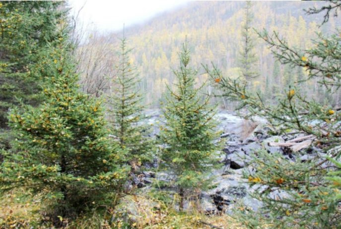
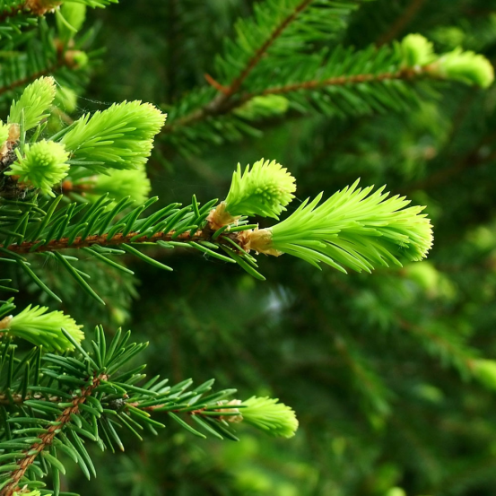

西伯利亚冷杉独具三大价值 人工培育成关键
2017-03-31 15:42:46 来源: 综合 作者:
冷杉是一种十分珍贵的树种，单是它的名字听上去就很高冷，这种树木不仅外形漂亮，而且具有很大的使用价值。而在众多的冷杉品种中，以西伯利亚冷杉最为珍贵。据专家介绍，西伯利亚冷杉在中国仅产于新疆阿尔泰山西北部的布尔津河上游及其支流喀纳斯河和霍姆河，在哈巴河上游的白哈巴河流域也有少量分布，属国家三级保护渐危种。区别于其他冷杉树种，西伯利亚冷杉具有经济、观赏及医药三大独特价值。
材质紧密 经济价值显著
冷杉的全身都是宝，枝干长而笔直，材质紧密、细致，花纹自然、美观，颜色浅淡适宜，加工时强度较小，切面光滑，使用中，树身干燥不易腐蚀，经久耐用，是制造建筑材料、家具、纸浆的上佳选择。树皮中含有大量树脂，从中提取的胶接剂是制作切片和精密仪器的好材料。

(图：西伯利亚冷杉林)
外观漂亮 极具观赏价值
冷杉树种的外形比较漂亮并且四季常青，可作为观赏性植物，在园林绿化中发挥作用。台湾冷杉就是台湾地区主要的造林树种，还多用于庭院的绿化。如今，由于圣诞的盛行，冷杉也被用于制作圣诞树。而在西伯利亚原始森林，很多冷杉已达四五十年树龄，成为当地生态保护的重要屏障。

(图：西伯利亚冷杉针叶)
改善神经系统 医药价值极高
在俄罗斯民间，人们使用西伯利亚冷杉针叶中的精华消炎镇痛、增强免疫力，更在近代取得了对西伯利亚冷杉精华研究的突破性进展——从西伯利亚冷杉新鲜针叶中提取到聚戊烯醇。澳大利亚墨尔本史威本大学脑科学研究所通过对聚戊烯醇的试验研究证实，聚戊烯醇具有提高认知能力、改善脑症状程度和酶活性的作用。目前，俄罗斯批准西伯利亚冷杉精华用于老年痴呆症的早期预防。
(图：俄罗斯进口西伯利亚冷杉精华)
虽然西伯利亚冷杉具有极高的应用价值，但由于是国家保护树种，国内还未实现产业化，只能进口俄罗斯西伯利亚冷杉精华。在俄罗斯的西伯利亚原始森林，拥有全球西伯利亚冷杉最为广泛的分布。以北京西伯利亚白桦茸研发有限公司引进的西伯利亚冷杉精华为例，砍伐多少冷杉就需人工种植多少冷杉。因此，除了成功获得西伯利亚冷杉精华的进口资质外，北京西伯利亚白桦茸研发有限公司还在俄罗斯托斯木克建立了自己的西伯利亚冷杉研发基地，实现了对西伯利亚冷杉的人工种植。